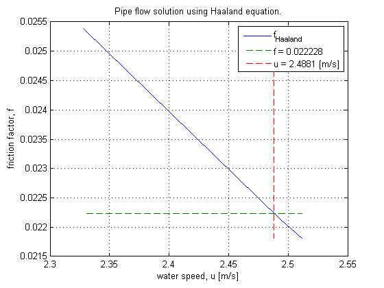
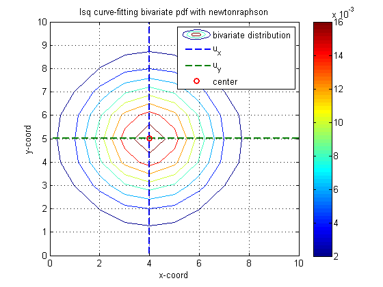

Contents
newton raphson example
Find the Darcy friction factor for pipe flow using the Colebrook equation.
fprintf('\n**************************************************\n') fprintf('NON-LINEAR SYSTEM OF EQUATIONS - PIPE FLOW EXAMPLE\n') fprintf('**************************************************\n')
************************************************** NON-LINEAR SYSTEM OF EQUATIONS - PIPE FLOW EXAMPLE **************************************************
References:
inputs:
p = 0.68; % [MPa] water pressure (100 psi) dp = -0.068*1e6; % [Pa] pipe pressure drop (10 psi) T = 323; % [K] water temperature D = 0.10; % [m] pipe hydraulic diameter L = 100; % [m] pipe length roughness = 0.00015; % [m] cast iron pipe roughness rho = 1./IAPWS_IF97('v_pT',p,T); % [kg/m^3] water density (988.1 kg/m^3) mu = IAPWS_IF97('mu_pT',p,T); % [Pa*s] water viscosity (5.4790e-04 Pa*s) Re = @(u) rho*u*D/mu; % Reynolds number
governing equations
Use Colebrook and Darcy-Weisbach equation to solve for pipe flow.
% friction factor (Colebrook eqn.) residual_friction = @(u, f) 1/sqrt(f) + 2*log10(roughness/3.7/D + 2.51/Re(u)/sqrt(f)); % pressure drop (Darcy-Weisbach eqn.) residual_pressdrop = @(u, f) rho*u^2*f*L/2/D + dp; % residuals fun = @(x) [residual_friction(x(1),x(2)), residual_pressdrop(x(1),x(2))];
solve
x0 = [1,0.01]; % initial guess fprintf('\ninitial guess: u = %g[m/s], f = %g\n',x0) % display initial guess options = optimset('TolX',1e-12); % set TolX [x, resnorm, f, exitflag, output, jacob] = newtonraphson(fun, x0, options); fprintf('\nexitflag: %d, %s\n',exitflag, output.message) % display output message
initial guess: u = 1[m/s], f = 0.01
Niter resnorm stepnorm lambda rcond convergence
-------------------------------------------------------------------
0 6.306e+04 0 1 2.023e-05 Inf
1 5.454e+04 6.174 0.1 4.686e-06 0.1451
2 4.258e+04 2.802 0.1776 1.994e-06 0.2476
3 2.82e+04 1.189 1 4.201e-07 0.4122
4 2732 0.8279 1 9.078e-07 2.334
5 23.65 0.01323 1 8.798e-07 4.75
6 0.03425 0.001349 1 8.809e-07 6.537
7 2.852e-09 1.207e-07 1 8.809e-07 16.3
exitflag: 1, Normal exit.
results
fprintf('\nOutputs:\n') properties = {'Pressure','Pressure-drop','Temperature','Diameter','Length', ... 'roughness','density','viscosity','Reynolds-number','speed','friction'}; units = {'[Pa]','[Pa]','[C]','[cm]','[m]','[mm]','[kg/m^3]','[Pa*s]','[]','[m/s]','[]'}; values = {p*1e6,dp,T-273.15,D*100,L,roughness*1000,rho,mu,Re(x(1)),x(1),x(2)}; fprintf('%15s %10s %10s\n','Property','Unit','Value') results = [properties; units; values]; fprintf('%15s %10s %10.4g\n',results{:})
Outputs:
Property Unit Value
Pressure [Pa] 6.8e+05
Pressure-drop [Pa] -6.8e+04
Temperature [C] 49.85
Diameter [cm] 10
Length [m] 100
roughness [mm] 0.15
density [kg/m^3] 988.4
viscosity [Pa*s] 0.000548
Reynolds-number [] 4.487e+05
speed [m/s] 2.488
friction [] 0.02223
comparison
solve using Haaland
Ntest = 10; u0 = linspace(x(1)*0.1, x(1)*10, Ntest); % [m/s] Re0 = Re(u0); f0 = (1./(-1.8*log10((roughness/D/3.7)^1.11 + 6.9./Re0))).^2; u0 = sqrt(-dp/rho./(f0*L/2/D)); % plot plot(u0, f0, '-', u0, x(2)*ones(1,Ntest), '--', x(1)*ones(1,Ntest), f0, '--') grid title('Pipe flow solution using Haaland equation.') xlabel('water speed, u [m/s]'),ylabel('friction factor, f') legend('f_{Haaland}',['f = ',num2str(x(2))], ['u = ',num2str(x(1)),' [m/s]'])
LSQ Curve Fitting
fprintf('\n**********************************************\n') fprintf('LEAST SQUARES CURVE FITTING WITH NEWTONRAPHSON\n') fprintf('**********************************************\n') % independent variables [x,y] = meshgrid(0:10,0:10); % bivariate distribution bivar = @(x1,x2,sig,u1,u2)1/2/pi/sig^2*exp(-1/2*(((x1-u1).^2+(x2-u2).^2)/sig)); sigma = 3; ux = 4; uy = 5; % std dev, x & y means z = bivar(x,y,sigma,ux,uy); % dist % plot figure,contour(x,y,z),hold('all') title('lsq curve-fitting bivariate pdf with newtonraphson') xlabel('x-coord'),ylabel('y-coord') % axes titles grid,colorbar % show colorbar and grid z_meas = z + (2*rand(11)-1)/1e4; % measured data % fitting function lsqfitfun = @(c)z_meas-bivar(x,y,c(1),c(2),c(3)); % fit coefficients to fun c0 = [1,2,3]; % initial guess fprintf('\ninitial guess: sigma = %g, ux = %g, uy = %g\n',c0) % display initial guess options = optimset('TolX',1e-12); % set TolX [c, ~, ~, exitflag, output] = newtonraphson(lsqfitfun, c0, options); fprintf('\nexitflag: %d, %s\n',exitflag, output.message) % display output message fprintf('\ncurve-fit coefficients: sigma=%g, ux=%g, uy=%g\n',c) lines = plot(repmat(c(2),1,11),0:10,'--',0:10,repmat(c(3),1,11),'--', ... c(2),c(3),'o'); set(lines,'LineWidth',2); legend('bivariate distribution','u_x','u_y','center')
**********************************************
LEAST SQUARES CURVE FITTING WITH NEWTONRAPHSON
**********************************************
initial guess: sigma = 1, ux = 2, uy = 3
Niter resnorm stepnorm lambda rcond convergence
-------------------------------------------------------------------
0 0.2697 0 1 0.6663 Inf
1 0.1298 0.5807 1 0.5942 0.7315
2 0.06264 0.8891 1 0.4813 0.7285
3 0.0306 1.321 1 0.4064 0.7166
4 0.01194 1.654 1 0.3987 0.9409
5 0.003244 0.6143 1 0.4381 1.303
6 0.0006406 0.1036 1 0.4308 1.622
7 0.0006271 0.004762 1 0.4305 0.02127
8 0.0006271 1.153e-05 1 0.4305 9.278e-08
9 0.0006271 1.815e-08 1 0.4305 2.074e-13
exitflag: 2, May have converged, but X is to close to XOLD.
curve-fit coefficients: sigma=2.998, ux=4.00425, uy=5.00273
